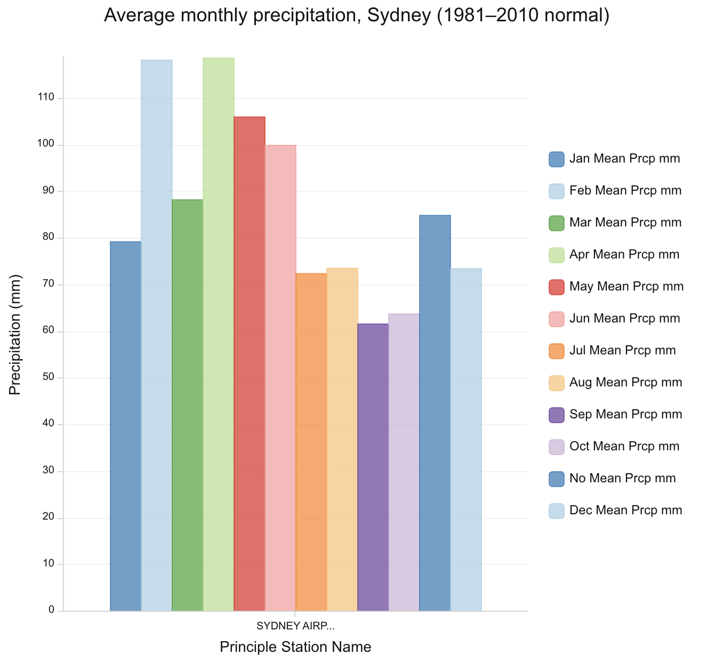
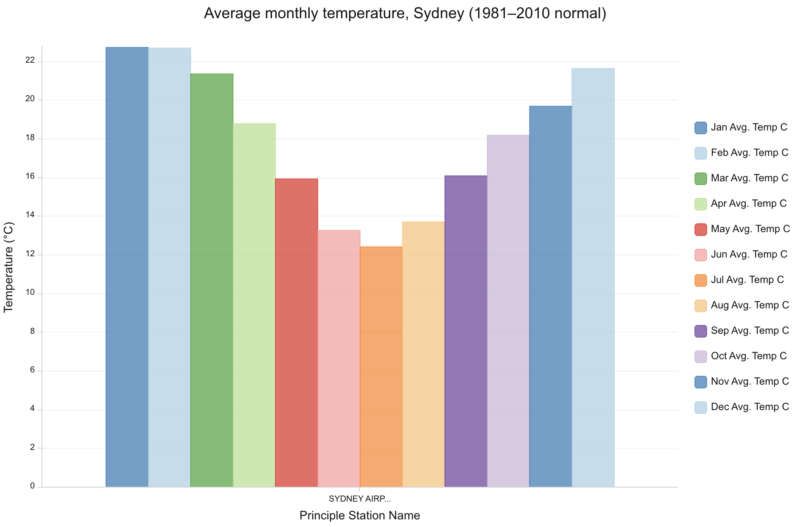

Week 02 · September 2026
Climate in Sydney
The question
How does Sydney's seasonal temperature and rainfall pattern compare with the rest of Australia
The data
I used the World Historical Climate - Monthly Averages for GHCN-D Stations for 1981-2010 layer published by Esri in ArcGIS Online. The layer is based on NOAA/NCEI's Global Historical Climatology Network-Daily (GHCN-Daily) data and contains monthly mean temperature and precipitation for weather stations around the world. I accessed the layer on September 16, 2026. Its climate normal covers 1981-2010, which is older than the current WMO normal of 1991-2020.
One limitation is that the documentation does not fully match the live data. The layer description reports 4,620 stations, while the live attribute table contains 7,480 records. This suggests that the dataset has been updated but parts of the description still refer to an earlier version.
The method
I first filtered the climate layer to Australia using the expression GHCN-D ID starts with AS. I used the resulting country-level view to compare broad regional patterns, especially coastal versus inland and northern versus southern Australia. I then added a second filter for the Sydney weather station using its GHCN-D station ID, joining the two expressions with AND so that only one station that is closest to Sydney remained.
For the Sydney station, I created two bar charts using the twelve monthly temperature fields and the twelve monthly precipitation fields, with aggregation set to Mean. I then compared Sydney's seasonal temperature and rainfall pattern with the broader regional pattern visible in the Australia-filtered map.


What I found
Sydney has a moderate seasonal temperature cycle. The warmest months are January and February, at about 22-23°C, while July is the coldest month at about 12-13°C. Rainfall occurs throughout the year, with no completely dry season.
Across Australia, the station data show substantial regional variation rather than one single national climate pattern. Inland stations tend to be drier and show larger temperature extremes, while many coastal stations are milder and wetter. Sydney therefore fits the broader coastal pattern more closely than the dry interior pattern.
What this does not show
This map does not show the current climate normal for Sydney, because the layer is based on the 1981-2010 reference period rather than the current 1991-2020 WMO normal. It also uses one weather station to represent Sydney, so the results may not capture variation across the whole metropolitan area. In addition, weather stations are unevenly distributed across Australia, meaning that areas with fewer stations should not be interpreted as having less climate variation. If I zoomed out from Sydney to the whole country, the main change would be the much greater regional variation between coastal, inland, northern, and southern Australia.
AI use: I used ChatGPT to help clarify the assignment instructions and improve the wording of my journal entry.